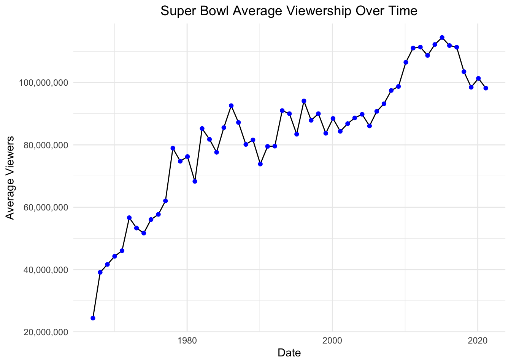
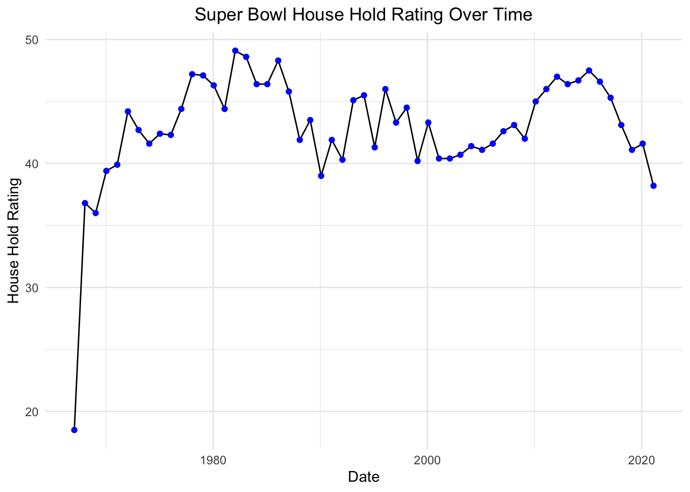
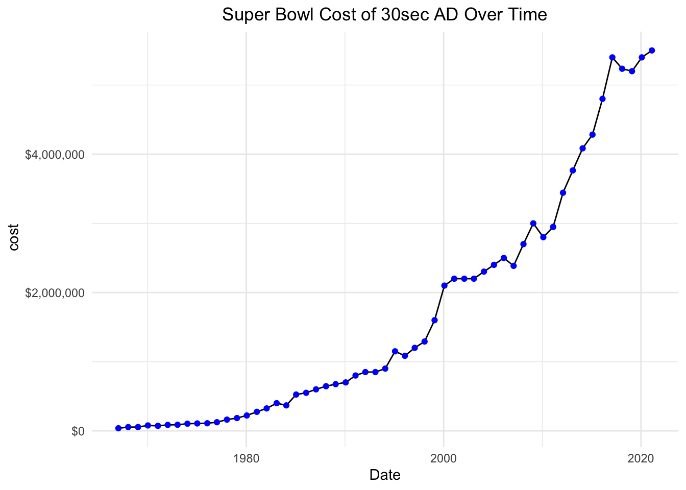
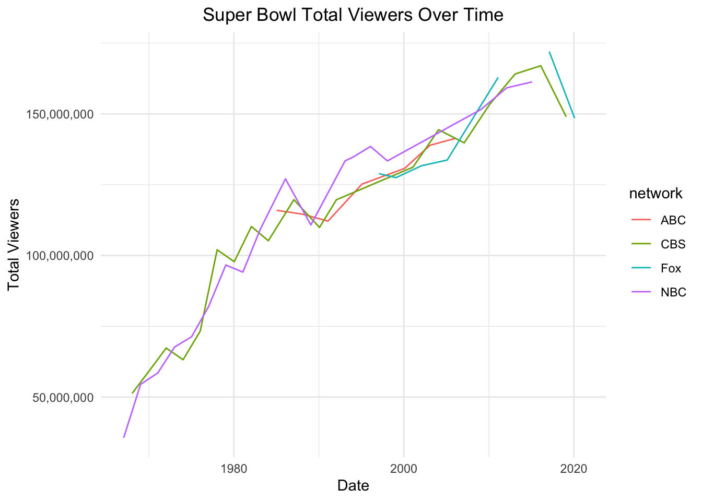

library(tidyverse)
library(here)
library(reactable)Read in Data
sb <- read_csv(here("posts/Super Bowl Views/super-bowl-ratings.csv"))Rows: 55 Columns: 9
── Column specification ────────────────────────────────────────────────────────
Delimiter: ","
chr (2): super_bowl, network
dbl (6): super_bowl_number, average_viewers, total_viewers, household_ratin...
date (1): date
ℹ Use `spec()` to retrieve the full column specification for this data.
ℹ Specify the column types or set `show_col_types = FALSE` to quiet this message.reactable(sb, defaultPageSize = 10, searchable = TRUE, highlight = TRUE, striped = TRUE)Time Series of Views
sb %>%
ggplot(aes(x = date, y = average_viewers)) +
geom_line() +
labs(title = "Super Bowl Average Viewership Over Time",
x = "Date",
y = "Average Viewers") +
theme_minimal() +
geom_point(color = "blue") +
theme(plot.title = element_text(hjust = 0.5)) +
scale_y_continuous(labels = scales::comma)
Looking at the progression of the viewership of the Super Bowl over time, we can see that it has been increasing. This is likely due to the increase in population and the increase in the number of people who have access to television. furthermore, can notice a drop in viewership in 2020, which is likely due to the COVID pandemic.
Further Exploration
sb %>%
ggplot(aes(x = date, y = household_rating)) +
geom_line() +
labs(title = "Super Bowl House Hold Rating Over Time",
x = "Date",
y = "House Hold Rating") +
theme_minimal() +
geom_point(color = "blue") +
theme(plot.title = element_text(hjust = 0.5))
looking at the household rating at seen an increase since the start of the super bowl,but levels out within the range of 40-50 household rating. Again this is likely due to the increase in the number of households that have access to television. Furthermore, late 1900s can see a positive trend, however starts to decrease and level out in the 2000s.
sb %>%
ggplot(aes(x = date, y = cost_of_30_second_ad_usd)) +
geom_line() +
labs(title = "Super Bowl Cost of 30sec AD Over Time",
x = "Date",
y = " cost") +
theme_minimal() +
geom_point(color = "blue") +
theme(plot.title = element_text(hjust = 0.5)) +
scale_y_continuous(labels = scales::dollar)
Looking at the cost of a 30 second ad, we can see that it has been exponentially increasing over time. Where the start of 2000s marks a significant increase in the cost of the ADs.
sb %>%
ggplot(aes(x = date, y = total_viewers), color = network) +
geom_line(aes(color = network)) +
labs(title = "Super Bowl Total Viewers Over Time",
x = "Date",
y = "Total Viewers") +
theme_minimal() +
theme(plot.title = element_text(hjust = 0.5)) +
scale_y_continuous(labels = scales::comma) +
scale_fill_viridis_d()Warning: Removed 2 rows containing missing values or values outside the scale range
(`geom_line()`).
Looking at the total viewers over time, we can see that the total viewers have been increasing over time. Furthermore, we can see that the total viewers are split between the networks, with CBS having the most viewers in 2020. Also NBC was the first to start broadcasting then CBS, later ABC started around 1985 and FOX started around 1998. Fox during 2017-2020 has the highest viewership.